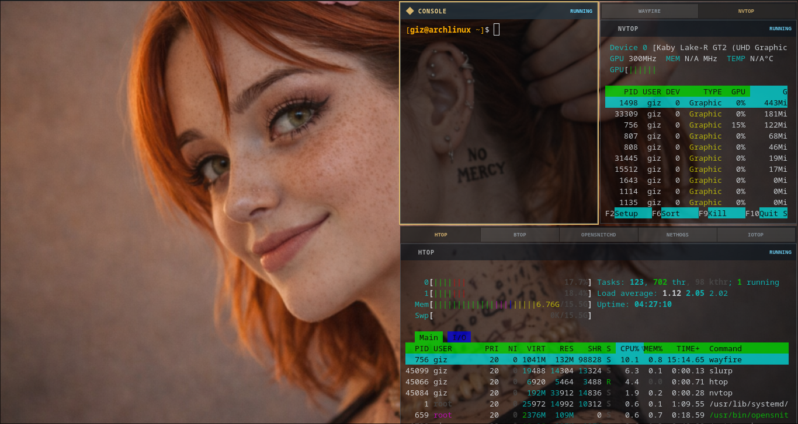
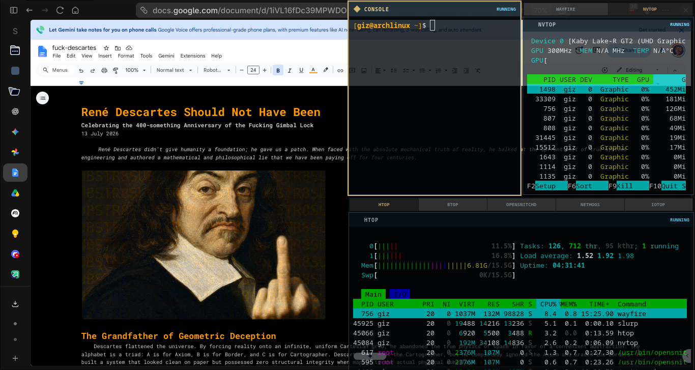

Persistent telemetry surface
SUBSTR8 HUD
A passthrough Wayfire overlay that keeps terminal telemetry visible without forcing you to choose between monitoring and using the desktop.
- Provides three terminal surfaces in a passthrough overlay selected with SUPER+Home.
- Delivers live telemetry at a glance through a deliberately active visual interface.
- Stays above the desktop and behind ordinary windows in its default state.
- Cycles through desktop, top, interactive, and invisible states with SUPER+Home.
- Integrates htop, btop, iotop, nvtop, nethogs, and OpenSnitch telemetry.
- Mirrors the real TTY running Wayfire in a dedicated read-only panel.

